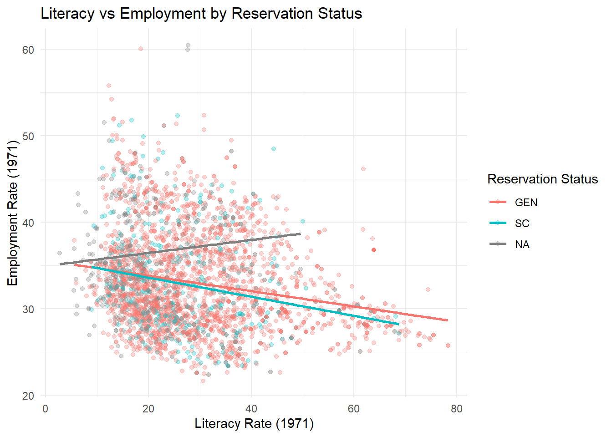
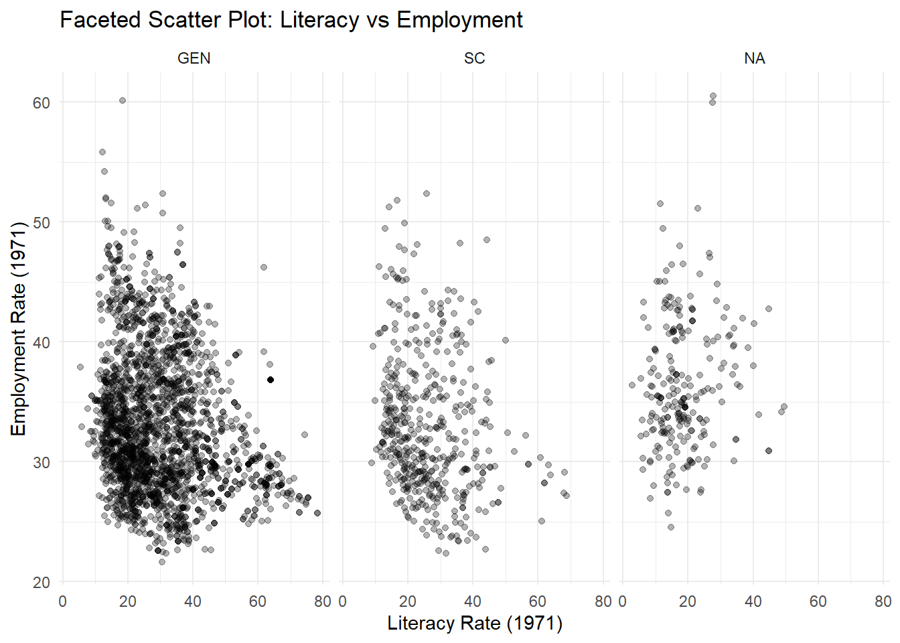
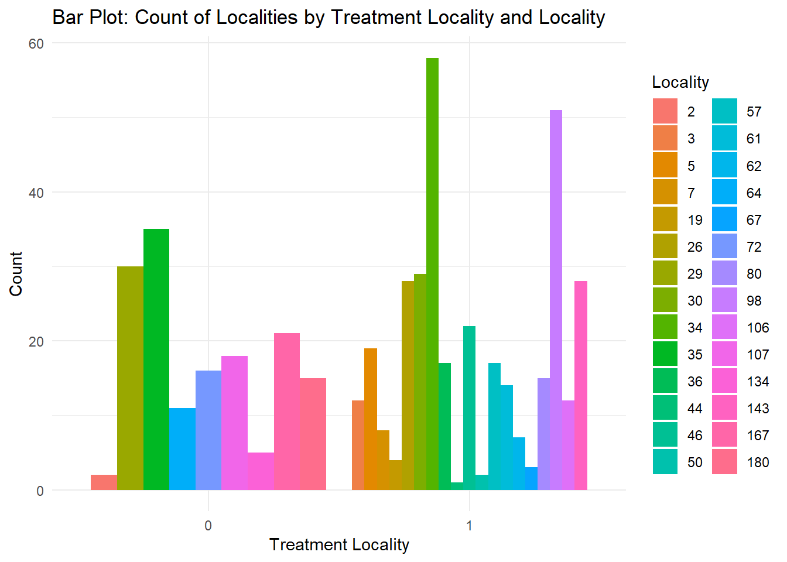
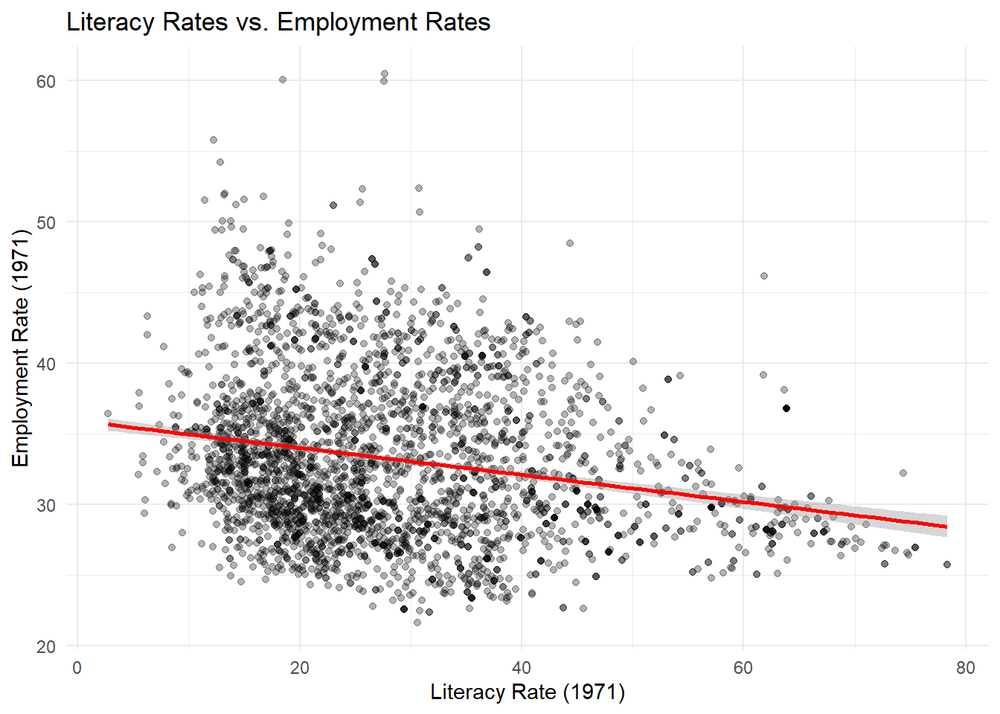
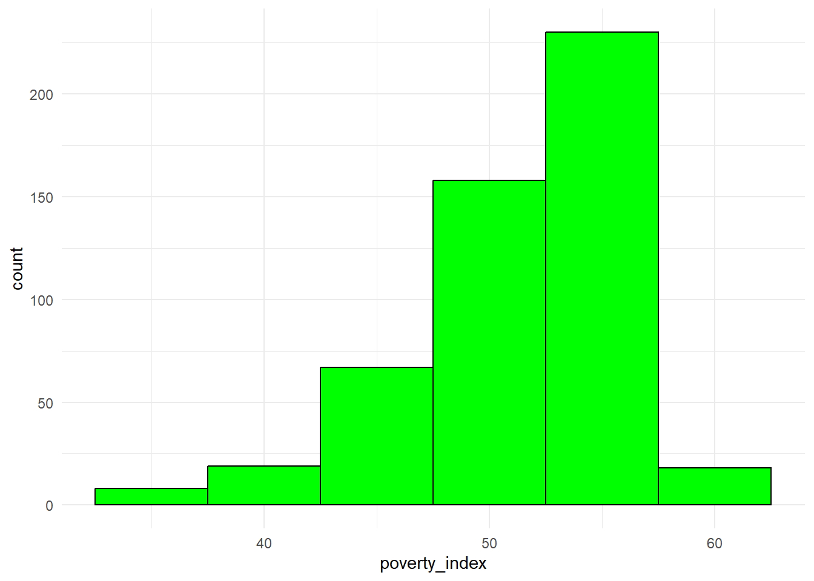
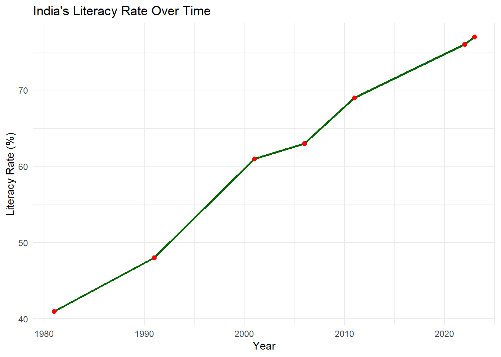

9 Visualizations using Base R
library(readxl)
ch4_p1 <- read_excel("Ch4PracticeA.xlsx", sheet = "base")
fch4_p1 <- head(ch4_p1, 500)9.0.1 Scatterplots
plot(fch4_p1$poverty_index, fch4_p1$health_expenditures, xlab= "Poverty Index", ylab= "Health Expenditures", main="Scatterplot of Poverty Index vs Health Expenditures")
Transparency
In ggplot2, we use alpha but in Base R, we use rgb()
plot(fch4_p1$poverty_index, fch4_p1$health_expenditures,
col = rgb(0,0,0,0.5),
pch=16,
xlab= "Poverty Index", ylab= "Health Expenditures", main="Scatterplot of Poverty Index vs Health Expenditures")
rgb for black is r=0, g=0, b=0 then the last is alpha 50% transparency.
pch = 16 is solid filled circle, if it is 1, it is a hollow circle.
Jitter
plot(jitter(fch4_p1$poverty_index, amount = 0.3),
jitter(fch4_p1$health_expenditures, amount=0.3),
col=rgb(0,0.5,0, 0.5),
pch=16,
xlab= "Poverty Index", ylab= "Health Expenditures", main="Scatterplot of Poverty Index vs Health Expenditures")
The amount is 0.3 which is the width and height equivalent of the jitter using ggplot2. We changed the color to green so g=0.5.
Color by group (aes(color=enrolled))
colors<-as.factor(fch4_p1$enrolled)
plot(jitter(fch4_p1$poverty_index, amount = 0.3),
jitter(fch4_p1$health_expenditures, amount=0.3),
col= colors,
pch=16,
xlab= "Poverty Index", ylab= "Health Expenditures", main="Scatterplot of Poverty Index vs Health Expenditures")
legend("topright",
legend = levels(colors),
col=1:length(levels(colors)),
pch=16,
title = "Enrolled")
We need to convert enrolled into categorical variable so that each value becomes a group. Base R automatically decides on the colors to each factor.
In the legend, we manually tell R to provide it, and we set legend = levels(colors), as factor levels being their legend, col=1:length(levels(colors)) assigns legend colors then pch=16 for matching the plot symbols.
9.0.2 Boxplots
If you want to change color, just add col =
Adding jittered points
boxplot(health_expenditures ~ as.factor(treatment_locality), data=fch4_p1,
col="green",
outline=FALSE)
stripchart(health_expenditures ~ as.factor(treatment_locality),
data=fch4_p1,
vertical = TRUE,
method = "jitter",
jitter = 0.2,
pch=16,
col = rgb(1,0.2,0.2,0.5), #similar to tomato color with transparency
add = TRUE)
We need to draw the boxplot before we add the jitter. outline = FALSE prevents double-plotting, stripchart() overlays the individual observations on the boxplot with jittering to avoid overlap, vertical = TRUE aligns points with the boxplots.
9.0.3 Bar Plots

We need to count the values while barplot visualizes the counts
Stacked Bar Plots
In the stacked bar plots, rows are the treatment_locality while columns are locality_identifier

Side-by-Side Bars
barplot(t(counts_matrix),
beside = TRUE, # side-by-side
col = rainbow(ncol(counts_matrix)),
legend.text = TRUE)
9.0.4 Faceting
Create the locality_group again
fch4_p1 <- fch4_p1 %>%
mutate(locality_group = cut(locality_identifier,
breaks = c(20, 40, 60, 80, 100),
labels = c("20-40", "40-60", "60-80", "80-100"),
include.lowest = TRUE))
table(fch4_p1$locality_group)##
## 20-40 40-60 60-80 80-100
## 197 42 66 51par(mfrow = c(2, 2))
for (g in levels(fch4_p1$locality_group)) {
subset_data <- subset(fch4_p1, locality_group == g)
plot(subset_data$poverty_index,
subset_data$health_expenditures,
main = paste("Locality Group:", g),
xlab = "Poverty Index",
ylab = "Health Expenditures",
pch = 16,
col = rgb(0, 0.5, 0, 0.6))
}
You will notice that unlike ggplot2, Base R skips the missing. To avoid this, you have to create a separate category for missing.
par(mfrow=c(nrows, ncols)) splits the plotting area then we created a function that loops each locality_group to have a different plot. Then, we reset the plotting layout with par(mfrow=c(1,1)) for succeeding plots.
9.0.5 Pie Chart
tcounts <- table(fch4_p1$treatment_locality)
pie(tcounts,
col = rainbow(length(tcounts)),
main = "Pie Chart: Proportion of Treatment Localities") 
Again, table() counts instances per category, while rainbow assigns a color to each category
Adding Percentages per slice
pslice <- round(100 * tcounts / sum(tcounts), 1)
#We create labels that includes the name of slice with the percent of each slice
labels <- paste(names(tcounts), "\n", pslice, "%", sep="")
pie(tcounts,
labels = labels,
col = rainbow(length(tcounts)),
main = "Pie Chart: Proportion of Treatment Localities")
9.0.6 Histogram
hist(fch4_p1$poverty_index,
col = "green",
border = "black",
xlab = "Poverty Index",
main = "Histogram of Poverty Index")R automatically chooses breaks.
9.0.7 Time Series
options(scipen=999)
plot(ch4_p2$year,
ch4_p2$nominal_gdp_current,
type = "l",
col = "darkgreen",
xlab = "Year",
ylab = "Nominal GDP (Current)",
main = "Time Series Plot of Nominal GDP (Current)")
To make the line, the type is small letter L, not 1. To add points:
options(scipen=999)
plot(ch4_p2$year,
ch4_p2$nominal_gdp_current,
type = "l",
col = "pink",
lwd = 2,
xlab = "Year",
ylab = "Nominal GDP (Current)",
main = "Time Series Plot of Nominal GDP (Current)")
points(ch4_p2$year,
ch4_p2$nominal_gdp_current,
col = "purple",
pch = 16) 